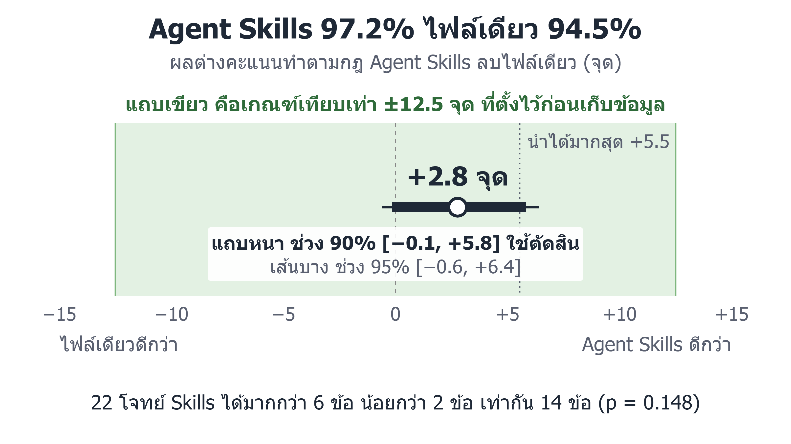

ขอบล่าง −0.1
กรณีแย่สุดที่ข้อมูลรองรับ Skills ด้อยกว่าราว 0.1 จุด จึงสรุปว่าไม่ด้อยกว่า
ไฟล์เดียวได้ 94.5% อยู่แล้ว
Skills นำได้มากสุดแค่ 5.5 จุด ถ้าเหนือกว่ามาก ๆ ก็วัดไม่ได้
เกณฑ์ ±12.5 กว้าง
กว้างกว่าส่วนต่างระหว่างไม่มีกฎกับไฟล์เดียว (9.5 จุด) เราจึงไม่อ้างว่าแบบของกฎไม่มีผลเลย
เทียบเท่า คือต่างกันไม่เกิน ±12.5 จุด ไม่ได้แปลว่าเหมือนกัน นับใหม่อีก 2 แบบก็ยังได้ผลเดิม (ตารางที่ 11 และ 12 ในเล่ม)